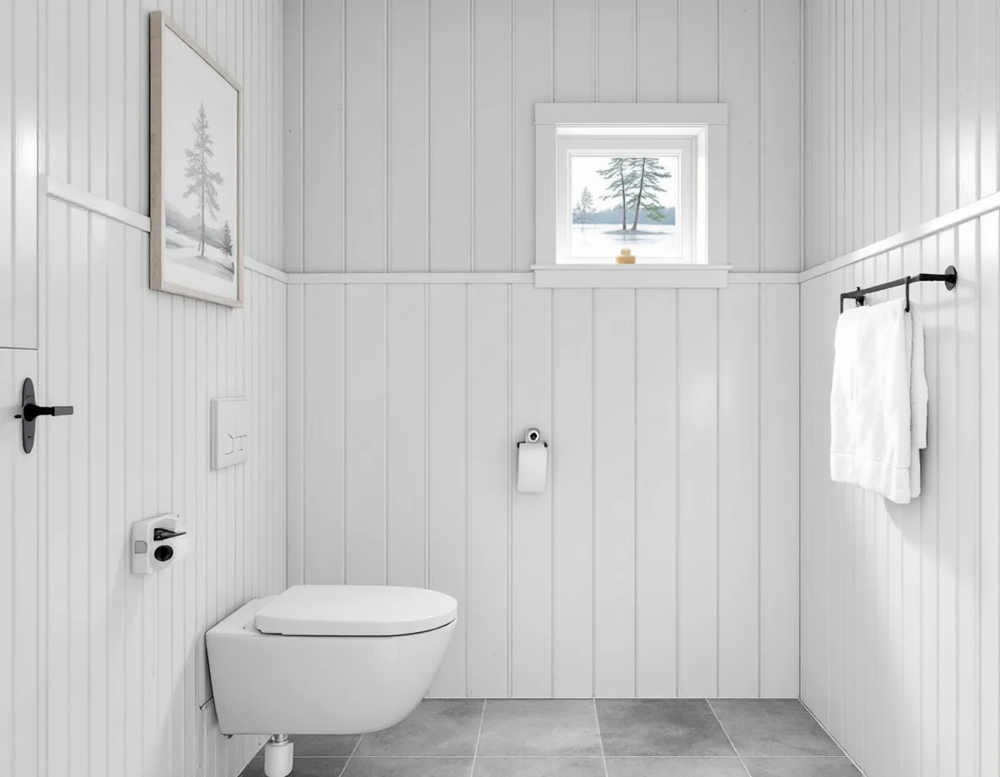

Besök och avloppsläge
Vi ser badrummet och tar reda på om huset har kommunalt avlopp, tank eller annan anläggning.

Där ett hus i Haninge har eget avlopp styr kommunens krav på kretsloppsanpassad teknik hur ett nytt badrum kan byggas, från toalettens spolvolym till var tanken ska stå.
Beskriv jobbet kort.
Något blev fel. Kontrollera uppgifterna eller ring 08 12 410 276.
Vi tittar på jobbet på plats innan du får offert.
Du ser vad som ingår och vad det kostar.
Vi drar av ROT direkt och sköter ansökan.
Geal Entreprenad AB, Bromma. Org.nr 559303-7566.
Geal Entreprenad AB river, bygger tätskikt och ytskikt och samordnar VVS och el, och vi planerar toalett, golvbrunn och ledningar efter den avloppslösning som är godkänd för fastigheten.
Haninge kommun skriver på sidan om olika typer av avlopp att det bästa alternativet för ett enskilt avlopp är en kretsloppsanpassad lösning med två separata rör: ett för toalettvattnet och ett för vatten från bad, disk och tvätt. Om du installerar en ny vattentoalett krävs en toalett som spolar mindre än en liter per spolning i genomsnitt, kombinerad med en separat rening av BDT-vattnet. Vid nybyggnation och när det är skäligt att separera WC-vattnet krävs kretsloppsanpassad teknik, även om undantag kan förekomma.
För ett nytt avlopp med WC-vatten är enligt sidan om nytt avlopp bara vakuumtoalett eller urinsorterande toalett tillåten, och WC-vattnet ska gå till en sluten tank. Att koppla en vattentoalett till ett befintligt avlopp hör till de åtgärder som kräver ansökan eller anmälan, liksom att ändra placering av anläggningen eller installera en ny typ av anläggning.
Skälet är kretsloppet. WC-vatten är näringsrikt och innehåller mindre tungmetaller än BDT-vatten, och kommunen samlar in det i slutna tankar, behandlar det så att det blir hygieniskt och använder det som gödsel på åkermark. Därför ska bara kiss, bajs och toalettpapper spolas ner.
En vakuumtoalett spolar enligt kommunen 0,5–0,7 liter per spolning och transporterar avfallet med luft, så ledningarna behöver ingen lutning. Kommunen rekommenderar den för permanentboende. För badrummet innebär det större frihet att placera toaletten, eftersom den inte behöver ligga där ett självfall räcker fram till tanken.
En urinsorterande vattentoalett har separata hål för urin och latrin och spolar ungefär en liter. Kommunen bedömer att den inte är lämplig för permanentboende, eftersom den ger fler tömningar och kräver en annorlunda användning och rengöring. VA-rådgivningens presentation om godkända avloppslösningar beskriver också att den urinsorterande toaletten använder självfall och kräver fall till den slutna tanken, medan vakuumtoaletten klarar klena ledningar.
Valet påverkar alltså både var toaletten kan stå, hur golvet byggs upp och hur ledningarna dras genom huset. Vi bestämmer toalettyp innan underlaget i rummet byggs, så att fall, ledningsdragning och anslutning till tanken stämmer med varandra.
Den slutna tanken ska enligt kommunen tömmas minst en gång per år av kommunens entreprenör och ha en stor manlucka på minst 400 millimeter. Den ska också ha ett larm som varnar ungefär två veckor innan tanken är full, och larmet ska placeras i bostaden. I Haninge och Nynäshamn kan du få tillstånd för en extremt snålspolande toalett till sluten tank även på öar, men på många öar är tömning möjlig bara två gånger per år, så tanken behöver dimensioneras med god marginal.
Innan du ansöker om enskilt avlopp ska du begära ett yttrande från slamtömningsentreprenören SRV och bifoga det i ansökan. Entreprenören ska yttra sig i alla ärenden, både nya anläggningar och ändringar, och för fastigheter på öar kan särskilda regler gälla för framkomligheten. Arbetet får börja först när kommunens skriftliga beslut finns, och ett avlopp som installeras utan tillstånd kan ge miljösanktionsavgift.
När anläggningen är klar ska en entreprenörsrapport och fotodokumentation skickas in. Det är fastighetsägarens ansvar att visa att avloppet byggts enligt tillståndet. Muskö är enligt kommunen ett prioriterat område för återföring av WC-vatten till jordbruket.
Vill du veta vilket avlopp som finns på fastigheten i dag hänvisar kommunen till Haningearkivet, där handlingarna finns. Alla hus med indraget vatten måste ha ett avlopp med slamavskiljare och en reningsanläggning, och på Avloppsguiden går det att testa om det egna avloppet är grönt, gult eller rött.
Har huset egen brunn ska brunnsvattnet enligt kommunens råd i första hand gå till dryck och matlagning. Kommunen föreslår snålspolande kranar och duschmunstycken och en mycket snålspolande toalett, och för permanentboende en extra snålspolande toalett. Regnvatten från taket kan samlas i en tank och enligt kommunen användas till bland annat tvätt och toalettspolning.
Ska regnvatten samlas från taket hänger det ihop med rännor och stuprör, se takrenovering i Haninge. Görs köket om samtidigt finns mer under köksrenovering i Haninge.
Vi ser badrummet och tar reda på om huset har kommunalt avlopp, tank eller annan anläggning.
Vid eget avlopp väljer vi toalettyp efter kommunens krav och hur huset används.
Rivning, tätskikt, VVS, el och ytskikt står var för sig.
Krävs tillstånd väntar arbetet på SRV:s yttrande och kommunens beslut.
Golvbrunn, fall, tätskikt och ledningar mot tanken eller det kommunala nätet.
Vi går igenom rummet, larmet och skötseln med dig.
Rotavdraget är 30 procent av arbetskostnaden, högst 50 000 kr per person och år och högst 75 000 kr tillsammans med rutavdrag. Material, till exempel toalett och tank, räknas inte.
För ett småhus godkänner Skatteverket att dra in och reparera vatten- och avloppsledningar och att anlägga avlopp, inklusive markarbeten som infiltrationsbäddar. Slamsugning och tömning av septiktankar ger däremot inget avdrag. Geal drar avdraget direkt på fakturan.
Om huset har kommunalt avlopp eller ska ha sluten tank, vilken toalettyp som krävs, hur långt ledningarna ska dras och om fastigheten ligger på en ö. Därtill kommer storlek och ytskikt. Besöket är gratis, och du får ett skriftligt kostnadsförslag.
Tätskikt, golvbrunn, el, VVS och intyg.
Badrumsrenovering i Stockholm →Takbyte, takbesiktning och plåtarbeten.
Takläggare i Haninge →Dalarö, Vendelsö och Brandbergen.
Takrenovering i Haninge →Skjutfält, kulturmiljö och skärgårdstomter.
Attefallshus i Haninge →Nytt hus och tillbyggnad i omvandlingsområden.
Byggföretag i Haninge →Mustiga 50-tal och pastell.
Fasadmålning i Haninge →Tegelvillor, grupphus och panelade gårdar.
Fasadrenovering i Haninge →Sportstugor och fönster i skärgårdsväder.
Fönsterbyte i Haninge →Gårdens fönster, från boningshus till ladugård.
Fönsterrenovering i Haninge →Egnahem, sportstugor och hus i sluttning.
Golvläggare i Haninge →Laga och slipa trägolvet i villan.
Golvslipning i Haninge →Egnahem, grupphus och Dalarö.
Köksrenovering i Haninge →Egnahem, grupphus och sommarvillor i Haninge.
Målare i Haninge →Falsad plåt, sjöbodar och beslag i Haninge.
Plåtslagare i Haninge →Verandor, altaner och skärmtak.
Snickare i Haninge →Kontrollplan och riskbedömning vid takbyte.
Takbyte i Haninge →Ny tapet och gamla lager i äldre villor.
Tapetsering i Haninge →Lov, situationsplan och kontrollplan.
Tillbyggnad i Haninge →Folkhemsvillan inifrån.
Totalrenovering i Haninge →Eller ring 08 12 410 276, mån–fre 08–17.
Beskriv jobbet kort.
Något blev fel. Kontrollera uppgifterna eller ring 08 12 410 276.